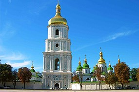
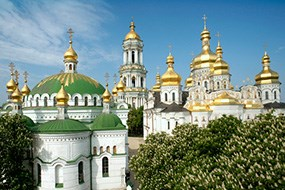
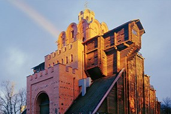

Київ- мальовнича столиця україни
Київ — столиця України, одне з найбільших і найстаріших міст Європи. Розташований у середній течії Дніпра, у північній Наддніпрянщині.Політичний, соціально-економічний, транспортний та освітньо-науковий центр країни. Окрема адміністративно-територіальна одиниця у складі України і адміністративний центр Київської області. Місце розташування центральних органів влади України, іноземних місій, штаб-квартир більшості підприємств та громадських об'єднань, що працюють в Україні.Населення — понад 2,8 млн чол. Київ з населеними пунктами вздовж Дніпра утворює Київську агломерацію з населенням до 4 млн осіб.
Популярні місця в Києві:
  Софіївський собор:
Однією з головних визначних пам'яток Києва є собор Святої Софії. Це одне з перших творів давньоруської архітектури Києва. Собор був побудований в XI столітті. Він розташований в самому центрі міста. Софія Київська прикрашена 260 кв.м. мозаїк та 3 тисячі кв.м. фресок. Навряд чи де-небудь в Європі можна знайти церкву, де б збереглося стільки фресок XI століття. Усі монастирські будівлі, що знаходяться поруч побудовані в 17 столітті і виконані в архітектурному стилі українського бароко.
Києво-Печерська Лавра:
Увінчана численними золотими куполами Києво-Печерська Лавра височить на правому березі Дніпра. Лавра - це доля Пресвятої Богородиці, колиска чернецтва на Русі і твердиня православної віри. Монастир був заснований в XI столітті і забудовувався протягом 9 наступних століть. Назва Лаври «Печерська» походить від слова «печери», які знаходяться під всією територією монастиря. У печерах селилися перші монахи і до цих пір можна бачити древні усипальниці, що зустрічаються в темних підземних галереях. На території Лаври знаходяться численні музеї, в тому числі й відомий Золотий Фонд України - чудова колекція скіфського золота.
Золоті Ворота:
Рідкісний пам'ятник оборонного зодчества Київської Русі, який зберігся до наших днів. Золоті ворота були головним в'їздом до Києва часів Ярослава Мудрого. Цей дивовижний витвір давньоруських зодчих викликав захоплення сучасників і наводив жах на ворогів своєю неприступністю. Золоті Ворота – могутня бойова брама, над якою підноситься Благовіщенська церква. У музеї проводяться театралізовані вистави, що розповідають про історію стародавнього Києва.!